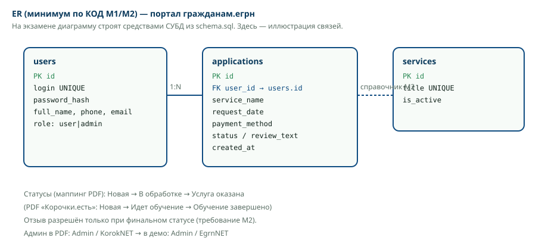

Пробный комплект DEMOWEB, собранный по функциональным требованиям PDF «КОД 09.02.07-3-2026 Том 1». В образце задания PDF — портал «Корочки.есть»; демо переносит ту же сетку модулей на бренд «гражданам.егрн».
Файл в checkout: КОД 09.02.07-3-2026 Том 1.pdf
(+ извлечённый текст _pdf_extract/full_text.txt,
приложения Прил_ОЗ_КОД 09.02.07-3-2026/).
grazhdanam-egrn/docs/requirements-from-pdf.md).
| гражданам.егрн | |
|---|---|
| Курс ДПО (3 названия) | 3 вида выписки ЕГРН |
| Дата начала обучения ДД.ММ.ГГГГ | Дата получения ДД.ММ.ГГГГ |
| Новая → Идет обучение → Обучение завершено | Новая → В обработке → Услуга оказана |
| Admin / KorokNET | Admin / EgrnNET |
| Отзыв об образовательных услугах | Отзыв о качестве услуги (после финала) |
cd grazhdanam-egrn pip install -r requirements.txt python app.py # http://127.0.0.1:5001
Админ: Admin / EgrnNET. Сценарий: рег → заявка → админ меняет статус → отзыв → mobile/.
| Модуль | Суть из PDF | Где в комплекте |
|---|---|---|
| М1 · 1:30 | БД+ER, рег/логин, заявки, админ, полный стек, Git-коммиты | app.py, db/schema.sql, templates |
| М2 · 1:30 | Дизайн, медиа из приложения, слайдер 4×3с, mobile 390×844, select/дата/фильтр/toast/пагинация | static/, mobile/, kod_slide*.jpg |
| М3 · 1:00 | Доработка БД, адаптив, анимации, качество кода | CHECK/FK, CSS micro-anim, Flask stack |
PDF: «Не забудьте создать ER-диаграмму средствами СУБД». Импортируйте db/schema.sql в Workbench/DBeaver/pgAdmin и постройте ER там. Ниже — иллюстрация связей комплекта.

4 кадра из приложения КОД (kod_slide1…4.jpg), автосмена 3 с, кнопки ‹ ›, точки.
Отдельные HTML: login, register, applications, new_application, admin в mobile/.
Полный список: grazhdanam-egrn/docs/criteria-checklist.md